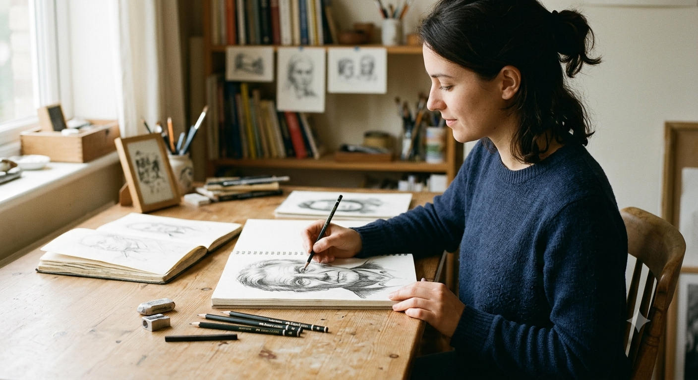
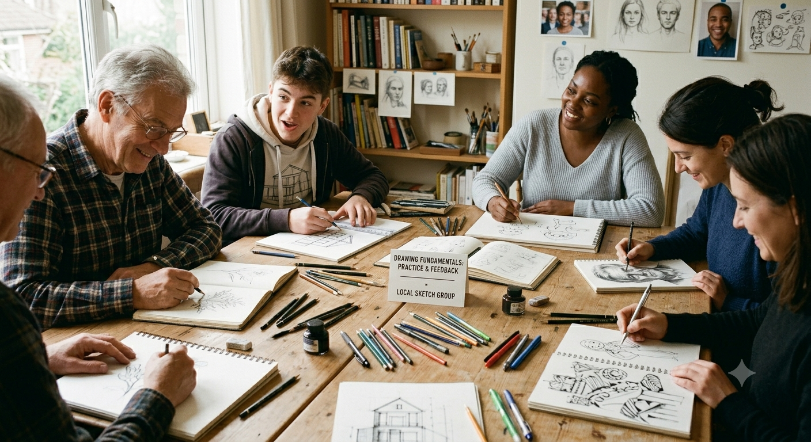
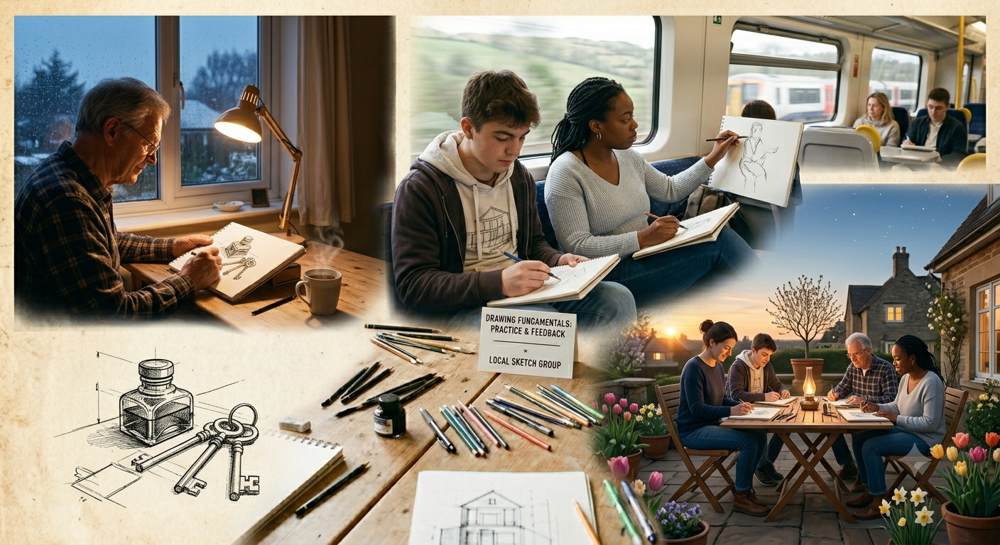
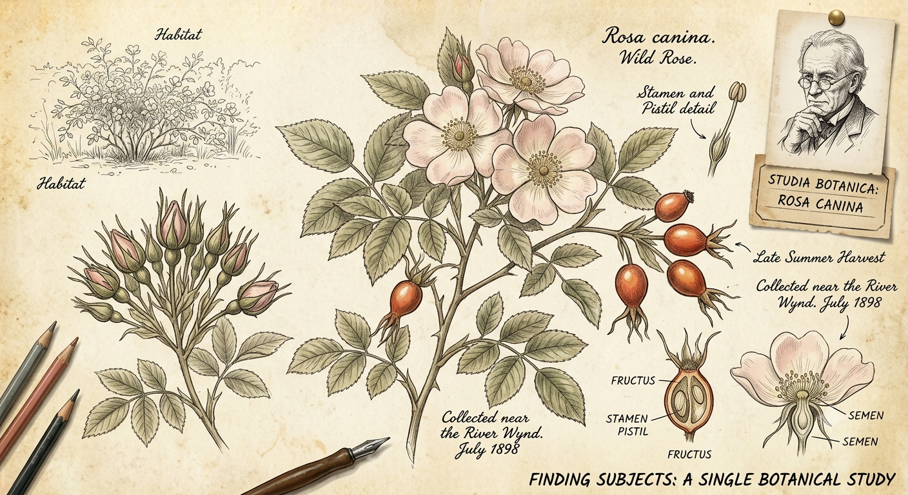
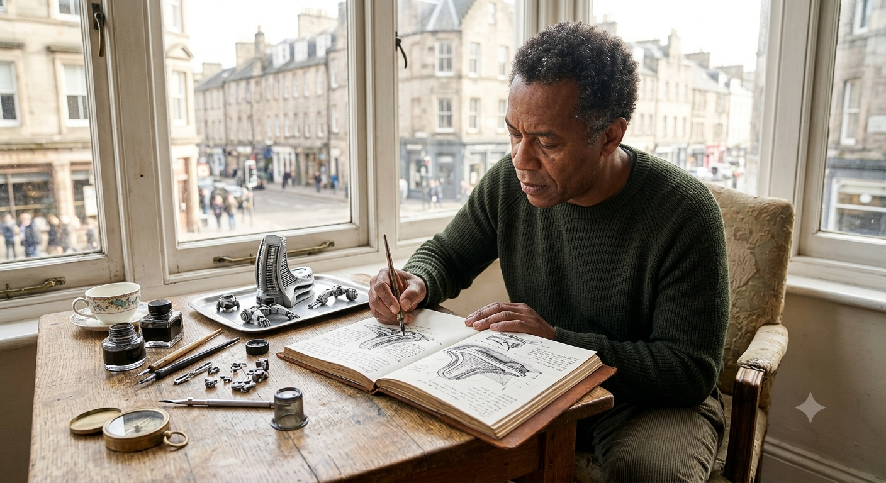

What is Drawing & Sketching?
Drawing is the act of putting lines, shapes, and shadows onto a flat surface to represent objects, people, or ideas. It is a simple form of communication that has been used for a long time. It can range from a quick, rough layout in a notebook to a finished piece done with charcoal or graphite.
It requires very little equipment compared to other activities. There is no need for specialized studios, paints, or complex tools. You only need a basic marking tool and a piece of paper to start, making it an easy hobby to pick up.
| Medium | Typical Application |
|---|---|
| Graphite & Pencils | Fine details, precision line work, and realistic portraits. |
| Charcoal | Expressive strokes, deep shadows, and high-contrast rendering. |
| Ink / Fineliners | Permanent lines, hatching textures, and clean illustrations. |

Who is This For?
The drawing community includes anyone who takes the time to learn the basic fundamentals of their subject matter. There is no specific type of person who draws. People who sketch include students, professional designers, architects, and casual hobbyists who just want to pass the time or unwind.
You do not need background knowledge or natural talent to start. Most people begin with messy lines and incorrect proportions. Progress usually comes from practice and looking at tips or feedback from other people online or in local groups.
| Skill Level | Core Focus Area |
|---|---|
| Beginner | Mastering hand-eye coordination and basic geometric structural breakdown. |
| Intermediate | Understanding directional values, complex lighting, and perspectives. |
| Advanced | Developing an individual artistic style and anatomy mastery. |

When to Draw
Because the materials are portable, you can draw at almost any time. Some people prefer to sketch early in the morning or late at night when there are fewer distractions. Others use regular downtime during the day, like breaks or commutes, to practice.
The timing can also depend on the weather. Spring and summer are typical times for going outside to sketch scenery or buildings. During the winter, most people move indoors to focus on still-life objects, indoor spaces, or technical practice.
| Season | Ideal Subject Focus |
|---|---|
| Spring / Summer | Plein air landscapes, botanical studies, and natural lighting practice. |
| Autumn / Winter | Controlled indoor setups, portrait modeling, and technical perspective drills. |

Where to Find Subjects
You can find things to draw in almost any environment. Places like public parks, backyards, and city streets offer organic shapes and basic structures to look at. Museums and local galleries are also common spots to sit and copy the work of older artists for practice.
If you prefer drawing at home, a simple desk with decent lighting is sufficient, using a device to find images. The main goal is to find a quiet space where you can focus on your work without frequent interruptions.
| Environment | Key Creative Benefit |
|---|---|
| Urban Areas | Improves structured perspective and clean architectural sketching. |
| Natural Parks | Enhances fluid line work and complex, asymmetric textures. |
| Private Desk | Allows for absolute control over lighting and long-form study. |

How to Get Started
To start drawing, you only need basic supplies. A standard 2B pencil, a regular eraser, and plain printer paper are enough for practice. The initial focus should be on building basic hand-eye coordination rather than trying to make a perfect image right away.
A common method is to break down complex objects into simple geometric shapes like circles, rectangles, and squares. Once you map out these basic forms, it becomes easier to add details and shading. Regular practice, even for short periods, helps build the skill over time.
| Pencil Grade | Core Function |
|---|---|
| 2H - H | Hard graphite for faint, light layout lines and structural setups. |
| HB - 2B | Standard medium lead used for balanced lines and midtone values. |
| 4B - 6B | Soft, rich dark graphite optimal for deep values and heavy shading. |
Why We Draw
Drawing forces you to look closely at objects and analyze how they are put together. When you sketch an item, you notice details like how light hits the surface, where the shadows fall, and the actual proportions of the object. It changes how you observe everyday things.
Many people also use drawing as a way to relax and focus on a single task. It requires enough concentration to keep your mind occupied, which can help reduce daily stress. Completing a sketch provides a simple sense of accomplishment from creating something manual.
| Benefit Category | Practical Everyday Impact |
|---|---|
| Cognitive | Heightens visual observational skills and sharpens spatial memory. |
| Therapeutic | Lowers stress levels by demanding high mindfulness and focused concentration. |

AI Prompts
AI was used for image generation, website styling, table creation (acts as cards), and JS nav logic.
| AI Utility | Project Integration Role |
|---|---|
| Gemini | Generated natural assets without overlay watermarks or labels. |
| Gemini/Claude | Structured an organized, single-page UI utilizing premium styling techniques. |
| Gemini | Provided usage on how the tables would work on the site naturally. |
- "Read the following description and generate an image based on it. Make the image natural, and do not caption it."
- "Act as a Senior UI/UX Front-End Developer. Write a clean, modern, Apple-inspired CSS stylesheet for a minimal single-page website. Use a premium system font stack, high-end white-space scales, a soft gray canvas background (#f5f5f7), crisp dark gray text typography, and rounded image borders (12px). Make sure the navigation is styled as a sleek, centered pill-shaped island using backdrop blur. Seamlessly preserve the target-switching logic (section:target and body:not(:has(section:target))) while introducing a smooth, clean fade-in animation whenever a new section target is active. Keep all CSS properties organized, variable-driven, and highly readable."
- "I do like the clean look of my site, but given the criteria its not applicable, please generate new styling thats clean like this one, but follows the crtieria."
- "Will changing the css html to a javascript version of what im trying to acheive, fix the issue entirely? if so i would like to do so.""
- "for every section we also need to include the use of tables, because my assignment asks for three components atleast, a figure (we have) a paragraph (we have) and some other component which i choose to be a table, how would this fit naturally on the site?"